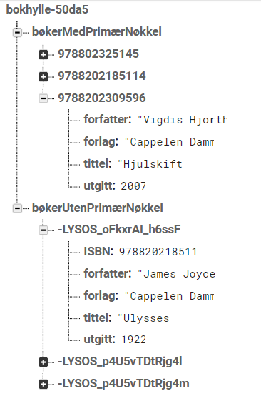

Dette er en besvarelse av oppgaver 1 fra dropbox paper om Firebase
Merk at det ikke er noen som vises på denne siden. For å se hva som skjer i JavaSCript må du se på kildekoden eller gå til github-repot
Koden resulterer i følgende database på firebase 